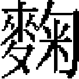

百官志四
宣政院。秩從一品。掌釋教僧徒及吐蕃諸族之事，遇吐蕃有事，則設分院往涖之，有大征伐，則會樞密院議之。院使十員，從一品。同知二員，正二品。副使二員，從二品。僉院二員，正三品。同僉三員，正四品。院判三員，正五品。參議二員，正五品。經歷二員，從五品。都事三員，從七品。照磨一員，正八品。管勾一員。正八品。至元初，立總制院，以國師領之。《元典章》：總制院使正二品，同知總制院事正三品。二十五年，因唐制吐蕃來朝見於宣政殿故事，更名宣政院。置院使二員，同知二員，副使二員，參議二員，經歷二員，都事四員，管勾一員，照磨一員。二十六年，置斷事官四員。二十八年，增僉院、同僉各一員。元貞元年，增院判一員。大德四年，罷斷事官。至大初，省院使一員。至治三年，置院使六員。天曆二年，定置諸員如上。其屬八：斷事官四員，從三品。經歷一員，從五品。知事一員，從八品。至元二十五年置。
客省使。秩從五品。大使二員，從五品。副使一員。從六品。至元二十五年置。
大都規運提點所。秩正四品。達魯花赤一員，正四品。提點一員，正四品。大使一員，副使一員，知事一員。至元二十八年置。
上都規運提點所。達魯花赤一員，提點一員，大使一員，副使一員，知事一員。至元二十八年置。
大都提點資善庫。秩從五品。掌錢帛之事。達魯花赤一員，從五品。提舉一員，從五品。同提舉一員，從六品。副提舉一員。從七品。至元二十六年置。
上都利貞庫。秩從七品。掌飲膳及金銀諸物。提領一員，從七品。副使一員。從八品。元貞元年置。
大濟倉。監支納一員，從七品。大使一員。從七品。
興教寺。管房提領一員。
行宣政院。元統二年，罷廣教總管府十六處，置行宣政院於杭州。院使二員，同知二員，副使二員，同僉、院判各一員，經歷二員，都事、知事、照磨各一員。至正二年，增設崇教所，秩正四品。以理僧俗之事。至元二年，西番寇起，置行宣政院，以也先帖木兒爲院使討之，事平即罷。
宣徽院。秩從一品。掌供玉食及燕享宗戚賓客，及諸王宿衛怯憐口糧食，蒙古萬户千户合納差發，係官抽分，羊馬價值芻粟，收受闌遺等事。院事六員，從一品。同知二員，正二品。副使二員，從二品。僉院二員，正三品。同僉二員，正四品。院判五員，正五品。經歷二員，從五品。都事三員，從七品。照磨一員，正八品。承發架閣庫一員。正八品。
至元四年，置宣徽院，以線真爲使。七年，改宣徽院爲光禄司。秩正三品。後仍爲宣徽院。十五年，置院使一員，同知、同僉各二員，主事二員，照磨一員。二十年，升從二品，增院使一員，置經歷二員，典簿三員。二十三年，升正二品。置院判二員，省典簿，置都事三員。三十一年，增院使四員。大德二年，增同知二員。三年，升從一品。四年，置副使二員。至大四年，省本院參議、斷事官。皇慶元年，增院使三員。始定怯薛歹萬人，本院掌其給授。後定置諸員如上。其屬十二。
光禄寺。秩正三品。掌起運米麵諸事。領尚飲、尚醖局沿路酒坊，各路布種事。卿四員，正三品。少卿二員，從四品。丞二員，從五品。主事二員。從七品。至元十五年，改都提點爲光禄寺，置卿一員，少卿三員，主事一員，照磨一員，管勾一員。二十年，改尚醖監。正四品。《元典章》：監令正五品，提點從五品，丞正六品，知事正八品。二十三年，復爲光禄寺，置卿二員，少卿、丞各一員。二十四年，增少卿一員。二十五年，改隸省部。三十一年，復隸宣徽院。延祐三年，降從三品。泰定二年，復升正三品。定置諸員如上。
大都尚飲局。秩從五品。掌造上用細酒。提點一員，從五品。大使一員，正六品。副使一員。正七品。中統四年，置大使、副使各一員，俱帶金符。至元十二年，增副使一員。十五年，由從六品升從五品，置提點一員。後定置諸員如上。
上都尚飲局。皇慶中始置。提點一員，大使、副使各一員。
大都尚醖局。秩從五品。掌造諸王、百官酒醴。提點一員，從五品。大使一員，正六品。副使二員，正七品。直長一員。正八品。中統四年，立御酒庫，設金符宣差。至元十一年，置提點。十六年，改尚醖局，定置諸員如上。
上都尚醖局。提點一員，大使一員，副使一員，直長一員。至元二十九年置。
大都醴源倉。秩從六品。掌受香莎蘇門等酒材糯米，鄉貢麯藥，以供上醖。提舉一員，從六品。大使一員，從七品。副使一員。正八品。至元二十五年置。
上都醴源倉。秩從九品。掌受大都轉輸米麪，並造車駕臨幸供給之酒。大使一員，從九品。副使一員。至元二十五年置。
尚珍署。秩正五品。置於濟寧路，掌收濟寧等處子粒以供酒材。達魯花赤一員。從五品。令一員，從五品。丞二員，從七品。吏目二員。至元十三年置，十五年罷入有司，二十三年復置。
安豐懷遠等處稻田提領所。秩從九品。提領二員。從九品。掌收稻田子粒，轉輸醴源倉。
尚舍寺。秩正四品。掌行在帷帳之陳設，及牧養駱駝供愛蘭乳酪。太監二員，正四品。少監二員，正五品。監丞二員，從六品。知事二員。從八品。至元三十一年置。初爲尚舍署，至元十七年升。秩正三品。三十一年，改爲寺。大德十一年，改爲監。秩正三品。至大元年，改爲寺。四年，仍爲監。尋復爲寺。延祐三年，復降，正四品。按舊紀：至元十七年升尚舍監，延祐七年降正四品，與志不合，未詳孰誤。定置諸員如上。
諸物庫。秩從七品。掌出納。提領一員，從七品。大使一員，從八品。副使一員。正九品。大德四年置。
闌遺監。秩正四品。掌不闌奚人口、頭疋諸物。太監一員，正四品。少監二員，正五品。監丞二員，正六品。知事一員，從八品。提控案牘一員。從九品。至元二十年，初立闌遺所。秩正五品。二十五年，改爲監，升正四品。大德十一年，升正三品。至大四年，復正四品。尋又升正三品。延祐七年，復爲正四品。定置諸員如上。
尚食局。掌御膳及出納油麪酥蜜諸物。秩從五品。提點一員，從五品。大使一員，正六品。副使二員，正七品。直長一員。正八品。中統二年，立尚食監。秩正四品。至元二年，改爲局，置提點一員。《元典章》：尚食太監正四品，少監正五品，丞從六品，提舉正七品。當是中統二年所置，舊志誤監爲局，至元二年始改爲局也。大德八年，置掌薪司，以供尚食，命宣徽院掌其事。二十年，省併尚藥局，尚藥局亦置於中統二年。别置生料庫。本局定置諸員如上。
大都生料庫。秩從五品。提點二員，從五品。大使二員，正六品。副使三員。正七品。至元十一年，置生料野物庫。二十年，别置庫，擬内藏庫例，置諸員如上。
上都生料庫。掌受宏州、大同虎賁、司農等歲辦油麪，大都起運諸物，供奉内府，放支宫人宦者飲膳。提點一員，大使一員，副使二員，直長一員。
大都大倉、上都大倉。秩正六品。掌内府支持米豆及酒材米

藥物。二倉各設提舉一員，正六品。大使各一員，從六品。副使各一員。從七品。至元五年立，設官三員，俱受制國用使司劄札。十二年，改提舉大倉，按舊紀：至元十七年立太倉提舉司，與志不合。設官三員，隸宣徽院。二十五年，升正六品。大都、上都柴炭局。秩正七品。達魯花赤各一員，正七品。大都大使一員，上都大使三員，從七品。副使各二員。正八品。至元十二年置。秩從六品。十六年，改提舉司，升從五品。大德八年，仍爲局，降正七品。
尚牧所。秩從五品。掌大官羊。提舉二員，從五品。同提舉一員，從六品。副提舉一員，從七品。吏目一員。至元十二年，立尚牧監，後省。至大四年，復立尚牧所，定置諸員如上。
沙糖局。秩從五品。掌沙糖蜂蜜煎造及方貢果木。提點一員，從五品。大使一員，正六品。副使一員。正七品。至元十三年置。秩從六品。《元典章》：沙糖局達魯花赤從五品。十七年，置提點一員。十九年，升從五品。
永備倉。秩從五品。掌受兩部倉庫，起運省部，計置油麵諸物及雲需府所辦羊，以備臨幸膳羞。提點一員，從五品。大使一員，正六品。副使一員。正七品。至元十四年置，給從九品印。二十四年，升從五品。
豐儲倉。秩從九品。掌出納車駕行幸膳羞。大使一員。從九品。
淮東淮西屯田打捕總管府。秩正三品。掌獻歲入以供内府，及湖泊山場漁獵以供内膳。達魯花赤一員，正三品。總管一員，正三品。同知一員，正五品。府判一員，正六品。經歷一員，從七品。知事一員，從八品。提控案牘一員。從九品。至元十四年，立總管府，並管漣海高郵河泊提舉司、沂州等處提舉司事。十六年，置揚州鷹房打捕達魯花赤總管府。二十二年，併爲淮東淮西屯田打捕總管府。後至元四年，升兩淮屯田打捕總管府爲正三品。疑本爲從三品，至惠宗時始升秩正。二十五年，以兩淮新附手號軍千户所隸本府。
又置屯田打捕提舉司九處：曰淮安州，曰高郵，曰招泗，曰安東海州，曰揚州通泰，曰安豐廬州，曰蘄黄，曰鎮巢，凡八處。舊志脱蘄黄一處，據《元典章》補。屯田打捕提舉司，曰塔山徐邳沂州等處山場屯田提舉司。俱秩從五品。每司達魯花赤一員，提舉一員，從五品。同提舉一員，從六品。副提舉一員。從七品。
又抽分場提領所凡十處：曰柴墟東西口，曰海州新壩，曰北砂太倉，曰安河桃源，曰大湖東西口，曰時堡興化，曰高郵寶應，曰汶湖等處，曰雲山白水，曰安東州。每所各設提領一員，同提領一員，副提領一員，俱受宣徽院劄付。
滿浦倉，秩正八品。掌收受子粒米麪等物，以待轉輸京師。大使一員，正八品。副使一員。正九品。至元二十五年置。《元典章》：滿浦倉監支納從七品。
圓米棋子局、軟皮局，各置提領一員，副提領一員，俱受宣徽院劄付。
手號軍人打捕千户所。秩從四品。管軍人打捕野物皮貨。達魯花赤一員，從四品。上千户一員，從四品。上副千户一員，正五品。彈壓一員。從八品。至元二十五年置。
龍慶栽種提舉司。秩從五品。管山歲輸粱米［一］，及易州、龍門、净邊官園瓜果等物，以奉上供。達魯花赤一員，從五品。提舉一員，從五品。同提舉一員，從六品。副提舉一員。從七品。至元十七年，置提舉司。《元典章》：山栽種副提舉從七品。延祐七年，改山爲龍慶州，因以名之。
弘州種田提舉司。秩正六品。掌輸納麥麪，以供内府。達魯花赤一員，正六品。提舉一員，正六品。同提舉一員，正七品。副提舉一員，正八品。直長一員。
豐潤署。秩從五品。掌歲入芻粟，以飼駞馬。達魯花赤一員，從五品。令一員，從五品。丞一員，從六品。直長一員。正八品。
常、湖等處茶園都提舉司。秩正四品。掌常、湖二路茶園户二萬三千有奇，採摘茶芽以貢内府。達魯花赤一員，從五品。按：都提舉司正四品，達魯花赤亦當爲正四品。志作從五品，恐是併平江提舉司時降都提舉司爲提舉司也。舊志簡略，無從補訂，姑仍之。提舉一員，從五品。同提舉一員，從六品。副提舉一員，從七品。提控案牘一員，從八品。都目一員。至元十三年，置統提領所十三處。十六年，升都提舉司。又别置平江等處榷茶提舉司，掌歲貢御茶。二十四年，罷平江提舉司，併掌之。統提領所七處，曰烏程，曰武康德清，曰長興，曰安吉，曰歸安，曰湖汶，曰宜興。《元典章》：榷茶提舉有杭州、寧國、龍興、建寧、廬州、岳州、鄂州、常州、湖州、潭州、静江、臨江、興國、常德府、古田、建安十六處。各設正、同、副提領一員，受宣徽院劄付，掌九品印。
建寧北苑武夷茶場提領所。提領一員，受宣徽院劄，直隸宣徽。
太禧宗禋院。秩從一品。掌神御殿朔望歲時諱忌日辰禋祀典禮。院使都典制神御殿事六員，秩從一品。同知兼佐儀神御殿事二員，正二品。副使兼奉贊神御殿事二員，從二品。僉院兼祗承神御殿事二員，正三品。同僉兼肅治神御殿事二員，正四品。院判供應神御殿事二員，正五品。參議二員，正五品。經歷二員，從七品。都事二員，從七品。管勾一員，從八品。照磨一員，從八品。斷事官四員，從三品。客省使大使四員，從五品。副使二員。從六品。天曆元年，罷會福、殊祥二院，改置太禧院以總制之。秩正二品。是年，升從一品，置參議二員。二年，改太禧宗禋院，立四總管府、一司爲之屬。定置諸員如上。至順元年，命所隸總管府，各置副達魯花赤一員。後至元六年罷。
隆禧總管府。秩正三品。達魯花赤一員，正三品。總管一員，正三品。副達魯花赤一員，正四品。同知一員，從四品。治中一員，從五品。判官一員，正六品。經歷一員，從七品。知事一員，正八品。照磨一員。從八品。至大元年，建南鎮國寺，初立規運提點所。三年，改規運都總管府，領大崇恩福元寺錢糧。十一月，改大崇恩福元寺規運總管府爲隆禧院。秩從二品。天曆元年，罷殊祥院，以隆禧、殊祥併立殊祥總管府。尋又改隆禧總管府。後至元六年，罷太禧宗禋院，隆禧總管府改爲規運提點所，秩正五品。隸宣政院。其屬七：
曰福元營繕司。秩正五品。達魯花赤一員，正五品。司令一員，正五品。大使一員，正六品。副使一員。正七品。天曆元年，以南鎮國寺所立怯憐口事産提舉司改爲崇恩福元提點所。三年，又改爲福元營繕司。
曰普安智全營繕司。達魯花赤一員，司令一員，大使、副使各一員。天曆元年，以太玉山普安寺、大智全寺兩規運提點所併爲一，置提點二員。三年，又改爲營繕司。
曰祐國營繕都司。達魯花赤一員，司令一員，大使、副使各一員，知事一員，提控案牘一員。天曆元年，置萬聖祐國營繕提點所。三年，改營繕都司。
曰平松等處福元田賦提舉司。秩從五品。達魯花赤一員，從五品。提舉一員，從五品。同提舉一員，從六品。副提舉一員。從七品。
曰田賦提舉司。提舉一員，同、副提舉各一員。
曰資用庫。至大三年，立規運都總管府，以資用庫、大益倉隸之。大益倉，志無名。提領一員，從五品。大使一員，正六品。副使一員。正七品。
曰萬神庫。提領一員，大使一員，副使一員。
會福總管府。達魯花赤一員，總管一員，同知一員，治中一員，府判一員，經歷，知事、提控案牘各一員。至元十一年，建大護國仁王寺及昭應宫，置財用規運所。秩正四品。十六年，改規運所爲總管府。《元典章》：大護國仁王寺、昭應宫規運財賦都總管府，達魯花赤、總管，俱正三品。至大元年，改都總管府。秩從二品。尋升會福院，置院使五員。延祐三年，升正二品。天曆元年，改會福總管府，降正三品，定置諸員如上。後至元六年，改規運提點所。其屬五：
曰仁王營繕司。達魯花赤一員，司令一員，大使一員，副使一員。至元八年，立仁王寺鎮遏提舉司。十九年，改鎮遏所。二十八年，併三提領所爲諸色人匠提領所。天曆元年，改鎮遏民匠提領所。三年，改爲仁王營繕司。
曰襄陽營田提舉司。達魯花赤一員，提舉一員，同提舉一員，副提舉一員。初爲襄陽等處水陸地土人户提領所。設官四員。大德元年，改提舉司。天曆二年，仍爲襄陽營田提舉司。
曰江淮等處營田提舉司。達魯花赤一員，提舉一員，同提舉一員，副提舉各一員。至元二十七年置。
曰大都等路民佃提領所。秩從七品。提領一員，從七品。大使一員，從八品。副使一員。正九品。至元二十九年，以武清等十處，併立大都水陸地土種田人民提領所。十五年，又設隨路管民都提領所。天曆元年，併爲大都等路民佃提領所。
曰會福財用所。秩從七品。提領一員，從七品。大使一員，從八品。副使二員。正九品。至元十七年，立財用庫。二十六年，立盈益倉。天曆元年，併爲會福財用所。
崇祥總管府。達魯花赤一員，總管一員，副達魯花赤一員，同知、治中、府判各一員，經歷、知事、提控案牘兼照磨各一員。至大元年，立大承華普慶寺都總管府。二年，改延禧監。尋改崇祥監。皇慶元年，升崇祥院。秩正二品。延祐七年罷，後復置。泰定四年，改爲大承華普慶寺總管府。天曆元年，改崇祥總管府。後至元六年，改規運提點所。其屬九：
曰永福營繕司。達魯花赤一員，司令一員，大使、副使各一員，都目一員。延祐五年，置大永福寺都總管府。秩正三品。後降爲營繕提點所。天曆三年，改永福營繕司。
曰昭孝營繕司。達魯花赤一員，司令一員，大使、副使各一員。壽安山規運提點所，三年改昭孝營繕司，天曆元年立，舊隸大禧總管府。至順二年，改隸崇祥總管府。
曰普慶營繕司。達魯花赤一員，司令一員，大使、副使各一員。天曆二年，改普慶修寺人匠提舉司爲普慶營繕提點所。三年，改營繕司。
曰崇祥財用所。提領一員，大使、副使各一員。至大二年，置諸物庫。四年，置普贍倉。天曆二年，併爲崇祥財用所。曰：永福財用所。掌出納顔料諸物。提領一員，大使、副使各一員。延祐三年，置諸物庫，又置永積倉。天曆二年，併爲永福財用所。
曰鎮江稻田提舉司。達魯花赤一員，提舉、同提舉、副提舉各一員。
曰汴梁稻田提舉司。達魯花赤一員，提舉、同提舉、副提舉各一員。
曰平江等處田賦提舉司。達魯花赤一員，提舉、同提舉、副提舉各一員。
曰冀寧提領所。提領一員。
隆祥使司。從二品。司使四員，從二品。同知二員，正三品。副使二員，從三品。司丞二員，正五品。經歷一員，從五品。都事二員，正七品。照磨兼架閣一員。正八品。天曆二年，中宫建大承天護聖寺，立隆祥總管府，秩正三品。八員。至順二年，升隆祥使司，升從二品。定置各員如上。後至元六年，改爲規運提點所。其屬十一：
曰普明營繕都司。秩正四品。掌營造出納錢糧之事。達魯花赤一員，司令、大使、副使各一員，知事一員，提控案牘一員。天曆元年，創大龍興普明寺於海南，置規運提點所。二年，撥隸龍祥府。三年，改爲都司。
曰集慶萬壽營繕都司。達魯花赤一員，司令、大使、副使各一員，知事一員，提控案牘一員。天曆二年，建龍翔、萬壽兩寺於建康，立龍翔萬壽營繕提點所，屬隆祥總管府。三年，改爲營繕都司。
曰元興營繕都司。達魯花赤一員，司令、大使、副使各一員，知事一員，提控案牘一員。天曆元年，置大元興規運提點所。三年，改爲營繕都司。
曰宣農提舉司。秩從五品。達魯花赤一員，提舉、同提舉、副提舉各一員。天曆二年，以大都等處田賦提舉司隸隆祥總管府。三年，改提舉司。
曰護聖營繕司。秩正五品。掌營造工匠、僧衆衣糧、收徵房課諸事。達魯花赤一員，司令、大使、副使各一員。天曆二年，立大承天護聖營繕所。三年，改營繕司。
曰平江善農提舉司。秩從五品。達魯花赤一員，提舉、同提舉、副提舉各一員。天曆二年，立田賦提舉司。三年，改提舉司。
曰善盈庫。提領一員，大使、副使各一員。天曆二年置，隸隆祥總管府。
曰荆襄等處濟農香户提舉司。秩正五品。達魯花赤一員，司令一員，提舉、同提舉、副提舉各一員。天曆二年，以荆襄提舉司所領河南、湖廣田土爲大承天護聖寺常住，改爲荆襄濟農香户提舉司。
曰龍慶州田賦提領所。秩正九品。提領、同提領、副提領各一員。掌龍慶州所有田土歲賦。天曆二年置。
曰平江集慶崇禧田賦提領所。提領、同提領、副提領各一員。天曆三年置。
曰集慶崇禧財用所。大使、副使各一員。天曆三年置。至順元年，立益都廣農提舉司及益都般陽、寧海諸提領所，並隸隆祥總管府。二年，罷益都等處廣農提舉司，改立總管府，秩從三品，仍令隆祥總管府統之。
壽福總管府。掌祭供錢糧之事。達魯花赤一員，總管一員，副達魯花赤一員，同知一員，治中一員，府判一員，經歷、知事、案牘照磨各一員。至大四年，建大聖壽萬安寺，置萬安規運提點所。秩正五品。延祐二年，升都總管府。秩正三品。尋升壽福院。秩正二品。泰定元年，改立總管府。後至元六年，改規運提點所。其屬五：
曰萬安營繕司。達魯花赤一員，司令、大使、副使各一員。延祐三年，以萬安規運提點所既罷，復立萬安營繕司。
曰萬寧營繕司。達魯花赤一員，司令、大使、副使各一員。大德十年，置萬寧規運提點所。天曆元年，改營繕司。後至元六年，四總管府及隆祥使司俱改規運提點所，仍立萬寧提點所，直隸宣政院。
曰收支庫。提領一員，大使一員。
曰延聖營繕司。達魯花赤一員，司令、大使、副使各一員。初爲天源營繕提點所。天曆二年，改營繕司。
曰諸物庫。提領一員，大使一員。延祐三年，立廣庫，秩正七品，置官三員，隸壽福院。
【校勘記】
［一］「粱米」，原作「梁米」，據《元史》卷八七志第三十七《百官三》改。
本章完!